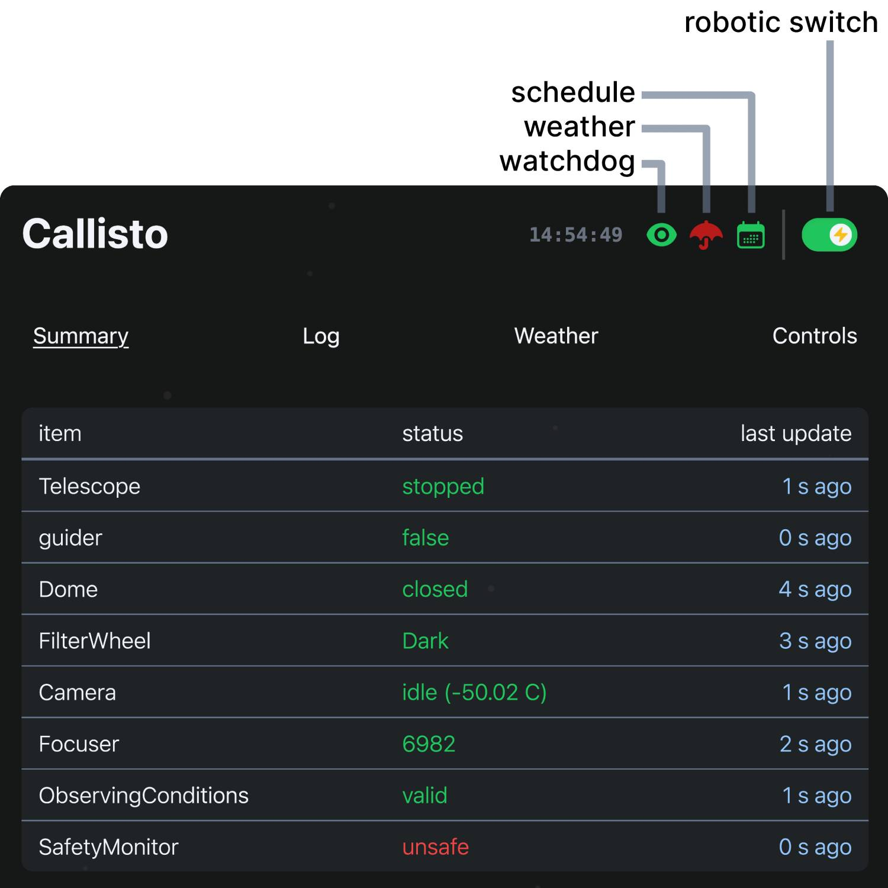

Operation Guide#
Astra prioritizes safe, fully automated robotic observing. This guide details operational workflows including first schedule, the web interface, startup options, and troubleshooting.
Prerequisites#
For reliable and safe operation, please ensure the following prerequisites are met:
Independent Safety: An independent safety system is in place to monitor the observatory and weather (exposing its state as an ASCOM SafetyMonitor).
This system must be capable of independently closing the observatory should the computer running Astra fail.
Recommendation: Configure the independent safety monitor with slightly relaxed weather thresholds compared to Astra (e.g., safety monitor set to trigger at 10% higher wind speeds than Astra). This ensures Astra triggers closure first, reserving the independent system as a fail-safe.
Properly Configured Hardware: All device hardware is connected, aligned, and the dome is slaved (if not roll-off). In the observatory configuration, please ensure:
close_dome_on_telescope_errorflag is set correctly for your needs, default isfalse. Independent to this, the observatory will always close if a non-telescope/dome device encounters an error.The
focus_positionis set to a known good value.The target camera
temperatureis defined; Astra uses this value during cooling sequences.
Accurate Timekeeping: The system and telescope clocks are accurate (e.g., via NTP or GPS).
First Schedule - Autofocus & Calibrate Guiding#
On first schedule run, you should autofocus and calibrate guiding to ensure optimal image quality and guiding performance for subsequent schedules.
Create a schedule file containing the following sequence (adjust times as needed) and then turn the robotic switch on (see Web Interface below):
1. Open First, trigger the open action. This opens the observatory and automatically cools the camera to the temperature defined in your configuration.
// Open observatory and cool
{
"device_name": "camera_main",
"action_type": "open",
"action_value": {},
"start_time": "2025-08-23 22:30:00.000",
"end_time": "2025-08-24 10:00:00.000"
}
2. Autofocus
Run the autofocus action. Ensure the filter matches one installed in your wheel.
// Autofocus
{
"device_name": "camera_main",
"action_type": "autofocus",
"action_value": {
"exptime": 3,
"filter": "V",
"search_range_is_relative": true,
"search_range": 1000,
"n_steps": [30, 20],
"n_exposures": [1, 1]
},
"start_time": "2025-08-23 22:35:00.000",
"end_time": "2025-08-23 22:50:00.000"
}
Upon successful completion, the optimized focus position is updated in the configuration. Autofocus images and V-curve plot are saved to the images/autofocus directory.
Focusing Tip
Coarse Search (e.g., fft): Best for broad ranges where stars appear as blurry “donuts.” These non-parametric operators measure overall frame sharpness without needing to identify individual stars, making them nearly impossible to “confuse” with distorted optics.
Fine Tuning (e.g., HFR): Best for precision near the focus peak. These algorithms fit a “V-curve” to the diameters of detected stars. They provide great accuracy once stars are point-like, but will fail during wide searches if the stars are too bloated to be recognized by the star-finder.
3. Calibrate guiding Finally, calibrate the autoguider parameters. The schedule measures the response of the PulseGuide command and the orientation of the camera on the sky.
// Calibrate Guiding
{
"device_name": "camera_main",
"action_type": "calibrate_guiding",
"action_value": {},
"start_time": "2025-08-23 22:50:00.000",
"end_time": "2025-08-23 23:10:00.000"
}
After this, you can run science observation schedules with guiding enabled.
Web Interface#
{kind=link}

Top portion of Astra’s web interface#
Astra provides a modern web interface for monitoring and control. If needed, API documentation is available at http://localhost:8000/docs after startup or here at API Endpoints – but most users will interact with the web interface for operation.
The header bar displays critical system status:
Observatory Name: Turns red if system errors are present.
UTC Time: Current universal time.
Watchdog Status: Green when the watchdog is running, red if stopped. It should always be running during operation to ensure safety mechanisms are active. If stopped, the system will not execute any schedule actions and will ignore weather and device statuses. To start it again, use Reconnect Devices in the Controls view.
Weather Status: Green indicates safe conditions, red indicates unsafe - dictated by the SafetyMonitor and internal safety monitor logic.
Schedule Status: Green when a schedule is active, gray when idle.
Robotic Operations Switch: The master switch for automated control (green=enabled, gray=disabled).
Warning
Enabling the Robotic Operations Switch will immediately start processing any valid, loaded schedule.
To reload a new schedule while running, you must first disable the robotic switch, then enable it again after the schedule has changed. This is to ensure the previous schedule is fully unloaded before starting the new one.
The interface is organized into four main operational views:
Summary: Real-time dashboard of device status, error states, and polled data. Also displays the latest scientific images and, if configured, live webcam or all-sky feeds.
Logs: Centralized view for system and device logs. It also displays the currently loaded schedule and line-by-line execution status, and guiding graphs.
Weather: Detailed environmental monitoring including 3-day graph history, current values, and safety limit thresholds used by the internal safety monitor logic (defined in the observatory configuration).
Controls: Sky map showing telescope position and some manual override controls.
Startup Options#
Following Quickstart, astra has a few optional startup options:
usage: astra [-h] [--config CONFIG] [--debug] [--port PORT]
[--truncate TRUNCATE] [--observatory OBSERVATORY] [--reset]
Named Arguments#
- --config
path to Astra’s base configuration file (default: ~/.astra/astra_config.yml)
- --debug
run in debug mode (default: false)
Default:
False- --port
port to run the server on (default: 8000)
Default:
8000- --truncate
truncate schedule by specified factor and reset time start time to now (default: None)
- --observatory
specify observatory name for custom subclassing (default: None)
- --reset
reset the Astra’s base config
Default:
False
Important
Each Astra instance runs exactly one observatory at a time, determined by the observatory_name field in your base configuration file (~/.astra/astra_config.yml).
Key Options:
--config: Specify a different base configuration file. Useful for running multiple observatories (each needs different--configand--port).--observatory: Select a custom Python subclass for site-specific behavior (see Custom Observatories). Optional - only needed if you’ve created custom subclasses.
In most cases you will run astra without any additional options.
Troubleshooting#
Schedule Not Starting?
Watchdog: Ensure the Watchdog is running. If it is stopped, use Reconnect Devices in the Controls view.
Robotic Mode: Verify the Robotic Operations Switch is enabled.
Time: Confirm the schedule’s
start_timeandend_timeare valid for the current time.Syntax: Validate the schedule file is valid JSONL format.
Config: Ensure referenced device names match your configuration exactly.
Actions Skipping?
Weather: Weather-dependent actions do not run during unsafe conditions.
Consistency: Check that device names in the schedule match
observatory.yaml.Conflicts: Check for timing overlaps or impossible constraints.
Dependencies: Ensure required paired devices are configured.
Incomplete Sequences?
Safety: Intermittent weather issues can abort a running sequence.
Timing: Ensure sufficient duration was allocated for the action to complete.
Watchdog Stopped or Device Lost?
An error stops the watchdog. A device poll that fails twice also stops, and it does not start again by itself. To recover without restarting Astra, use Reconnect Devices in the Controls view (or POST /api/reconnect_devices).
What it does: It stops the watchdog, restarts every device process, connects the devices again, restarts polling, clears the errors, and starts the watchdog again. It does not disconnect the drivers. Device changes in the observatory config (for example a new IP address, or an added or removed device) are used. A changed SafetyMonitor
device_nameormax_safe_durationneeds a restart of Astra.Before you use it: Stop the schedule. The reconnect is refused while a schedule, an action, or the guider runs. The message names the tasks that still run.
If it is refused: Wait until the named tasks end. To start only the watchdog, without new device processes, call
POST /api/startwatchdog, for example from the API page at/docs.After: The Robotic Operations Switch stays off. Check the device status and the logs, then turn it on again.